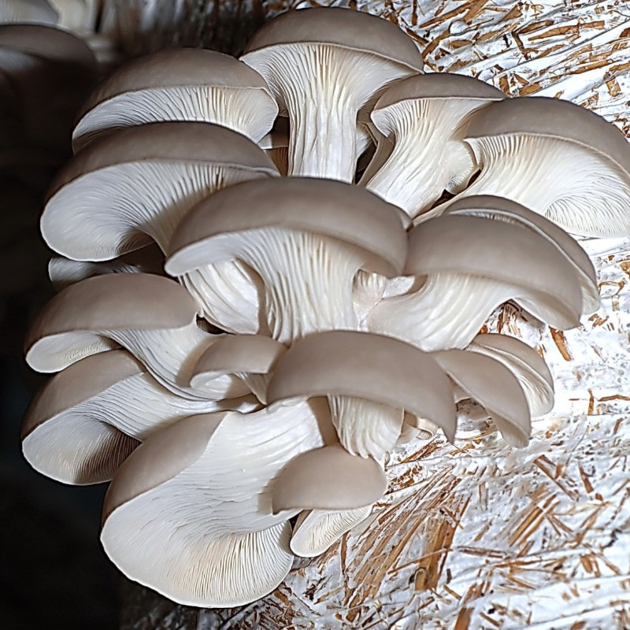
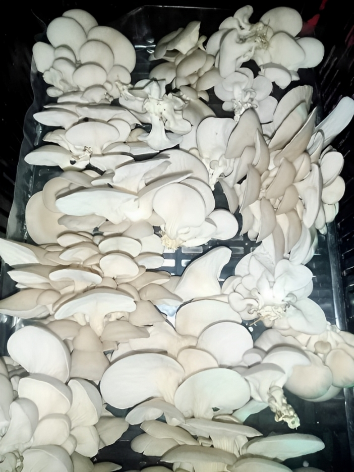
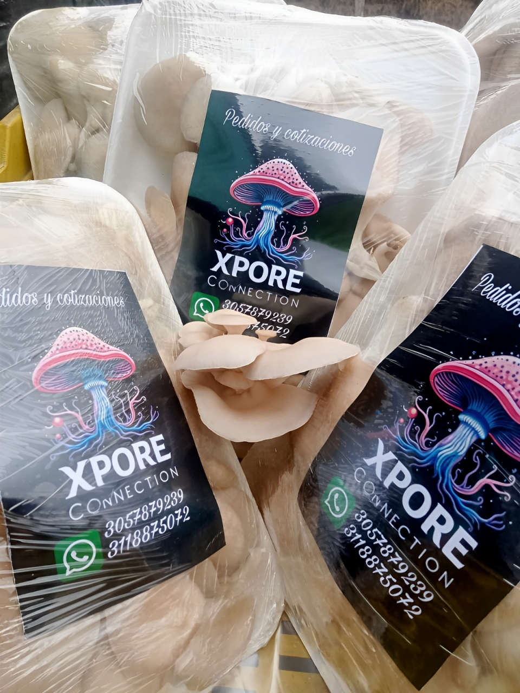

En las tierras fértiles de Sibaté, cultivamos los mejores hongos orellanas de Colombia con técnicas 100% naturales. Nuestra misión es llevar proteína sostenible a tu mesa mientras cuidamos el medio ambiente.
Nuestra Pasión por la Fungicultura
¿Por qué elegir nuestras Orellanas?
Innovación y Tradición Familiar
Como empresa familiar, combinamos métodos ancestrales con tecnología de punta para ofrecer setas de la más alta calidad.
Cultivo Científico
Nuestras instalaciones climatizadas y protocolos estrictos garantizan:
- 🌡️ Temperatura controlada
- 💧 Humedad óptima
- 🛡️ Cero pesticidas

Las Orellanas: Tu aliado nutricional
Potencia Proteica
25g de proteína por cada 100g, ideal para dietas veganas y deportivas
Salud Cardiovascular
Ricas en lovastatina natural que regula el colesterol
Eco-Amigables
Cultivo con 70% menos huella hídrica que la proteína animal
Nuestras Presentaciones

Presentación 250g
- ($12.000)

Presentación 500g
- ($18.000)